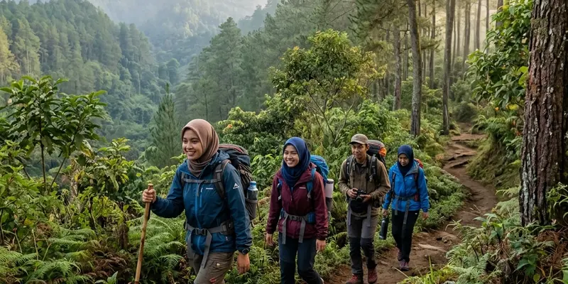

Agro wisata Batu mencakup berbagai pilihan kebun buah dan sayur selain strawberry, seperti kebun apel dan kebun sayur organik, yang dapat dipilih sesuai kebutuhan dan waktu kunjungan keluarga.
Ringkasan Inti
- Kota Batu memiliki beragam agro wisata selain kebun petik strawberry.
- Kebun apel menjadi salah satu agro wisata populer lain di kawasan Batu.
- Pemilihan agro wisata sebaiknya disesuaikan dengan waktu dan kondisi fisik pengunjung.
- Setiap jenis agro wisata memiliki karakteristik area dan aktivitas yang berbeda.
- Menggabungkan kunjungan beberapa agro wisata dapat dilakukan dalam satu hari perjalanan.
Apa Saja Jenis Agro Wisata yang Tersedia di Kota Batu?
Jenis agro wisata yang tersedia di Kota Batu meliputi kebun petik strawberry, kebun apel, kebun sayur organik, hingga peternakan edukasi yang menawarkan pengalaman interaksi langsung dengan hewan ternak.
Selain strawberry, kebun apel menjadi salah satu agro wisata paling dikenal di Batu karena daerah ini memang telah lama menjadi salah satu sentra produksi apel di Jawa Timur, dengan area kebun yang umumnya lebih luas dibanding kebun strawberry.
Bagaimana Cara Memilih Agro Wisata Batu Sesuai Kebutuhan Keluarga?
Cara memilih agro wisata Batu sesuai kebutuhan keluarga adalah dengan mempertimbangkan usia anggota keluarga, waktu kunjungan yang tersedia, serta jenis aktivitas yang diinginkan, apakah berfokus pada memetik buah, edukasi pertanian, atau interaksi dengan hewan.
Keluarga dengan anak balita umumnya lebih cocok memilih agro wisata dengan area yang tidak terlalu luas dan medan yang landai, seperti kebun strawberry, sementara keluarga dengan anak yang lebih besar dapat mempertimbangkan agro wisata dengan area lebih luas seperti kebun apel.

Panorama alam asri area perkebunan dan agrowisata dataran tinggi Batu Malang.
Apa Perbedaan Agro Wisata Strawberry dengan Agro Wisata Lainnya di Batu?
Perbedaan utama agro wisata strawberry dengan agro wisata lainnya di Batu terletak pada durasi kunjungan, luas area kebun, dan tingkat kesulitan medan yang dilalui pengunjung selama beraktivitas di lokasi.
Kebun strawberry umumnya memiliki area yang lebih kecil dengan waktu kunjungan singkat, sedangkan kebun apel atau agro wisata edukasi pertanian biasanya membutuhkan waktu lebih lama karena area yang lebih luas dan aktivitas yang lebih beragam, seperti penjelasan proses budidaya secara langsung dari pemandu kebun.
Apa Manfaat Menggabungkan Beberapa Agro Wisata dalam Satu Kunjungan?
Manfaat menggabungkan beberapa agro wisata dalam satu kunjungan adalah pengalaman liburan yang lebih beragam tanpa perlu menambah hari perjalanan, mengingat lokasi berbagai agro wisata di Kota Batu umumnya berdekatan satu sama lain.
Dengan merencanakan rute kunjungan yang efisien, wisatawan dapat mengunjungi kebun strawberry di pagi hari dan melanjutkan ke agro wisata lain seperti kebun apel atau peternakan edukasi pada siang harinya, sehingga waktu liburan dapat dimanfaatkan secara lebih optimal.
Apa Faktor yang Perlu Diperhatikan Saat Memilih Agro Wisata di Batu?
Faktor yang perlu diperhatikan saat memilih agro wisata di Batu meliputi jarak lokasi, jam operasional, ketersediaan hasil panen, serta fasilitas pendukung seperti area parkir dan tempat istirahat bagi keluarga dengan anak kecil atau lansia.
Wisatawan juga sebaiknya mempertimbangkan cuaca saat merencanakan kunjungan, mengingat sebagian agro wisata di Batu berada di area terbuka yang dapat terpengaruh kondisi hujan, sehingga rencana cadangan aktivitas indoor dapat membantu bila cuaca kurang mendukung.
Kesimpulan
Agro wisata Batu menawarkan lebih dari sekadar kebun petik strawberry, mulai dari kebun apel, kebun sayur organik, hingga peternakan edukasi yang dapat disesuaikan dengan kebutuhan dan waktu kunjungan keluarga. Merencanakan kombinasi beberapa agro wisata dalam satu hari dapat menjadi cara efektif memaksimalkan pengalaman liburan di Kota Batu.
Pertanyaan yang Sering Diajukan
Agro wisata populer lainnya di Batu meliputi kebun apel, kebun sayur organik, dan peternakan edukasi.
Bisa, karena lokasi berbagai agro wisata di Kota Batu umumnya berdekatan sehingga dapat dikunjungi dalam satu hari perjalanan.
Agro wisata dengan area lebih kecil dan medan landai seperti kebun strawberry umumnya lebih cocok untuk anak balita dibanding kebun dengan area yang lebih luas.